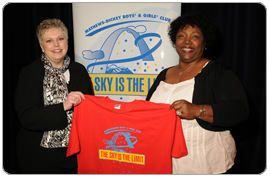
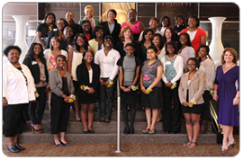
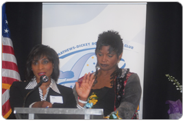

The Sky is the Limit

Mathews-Dickey VP, PR & Special Events Barbara Washington and Maritz's Debbie Schirmer show off the 2011 “The Sky is the Limit” tee shirt

Mathews-Dickey VP, PR & Special Events Barbara Washington (front row, lower right) and keynote speaker Susan Wilson Solovic with the 2011 “The Sky is the Limit” scholarship slate.

KTVI Fox 2's Shirley Washington and Actress Anna Maria Horsford announce the 2011 scholarship winners.
VIEW MORE IMAGES IN
OUR PHOTO GALLERY
Grammy-Award Winning Recording Artist Debby Boone shares insights and lights up the lives of young women and mentors at the star-powered Mathews-Dickey 18th annual "The Sky is the Limit" career-readiness luncheon. The famed artist behind the 1977 hit "You Light Up My Life" provides the keynote address at 11 a.m., Friday May 4, at the Hilton St. Louis at the Ballpark, One S. Broadway.
Three-hundred business women sponsor lunches for 300 junior high and high school-aged luncheon partners. KTVI Fox 2's Shirley Washington moderates the affair, and Actress Anna Maria Horsford, famed for her role in the "Amen" and now BET's "Reed Between the Lines" TV series, leads off the 25-$1,000 college scholarship winner announcements.
As a prelude to the luncheon, a top-flight crew of professional women offers informative seminars ranging from BJC's "Paging Doctor You" to Boeing's "Keep Them Flying: A Career in Aircraft Training Systems," from 8 a.m. to 2 p.m., Saturday April 14, at Maritz's 1400 S. Highway Drive building.
"Our program aims to give young women the necessary skills for their overall educational, career and personal development," said Barbara A. Washington, program founder and vice president, public relations & special events at Mathews-Dickey Boys' & Girls' Club. "For the first time, we've assembled a Board Room Chic panel to address young women's career success, self-image and fashion sense."
The "Board Room Chic" trio is Salon Edge Hair & Tanning Salon Master Stylist Sandra Dennis, Wellbridge Spa & Fitness Club Esthetician Jool Guest and Esther Owner, Molly Brown. KTVI Fox 2 Reporter Bonita Cornute emcees the workshop, with opening remarks by "Watch Out for the Elephants" Co-Author Cynthia Todd-Takeyama, and Maritz Community Affairs Manager Debbie Schirmer as closer.
Participants hail from Belleville, Cahokia, Clayton, East St. Louis, Ferguson-Florissant, Francis Howell, Hazelwood, Kirkwood, Ladue, Lindbergh, Normandy, Parkway, Pattonville, Ritenour, Riverview Gardens, Rockwood, St. Louis Public Schools, University City and Webster Groves school districts and several parochial, private and charter schools. Twenty-five graduating seniors, including representatives from each district and Mathews-Dickey members, receive $1,000 college scholarships for their community service, extra-curricular participation and academic excellence.
In its 18th year, the program reaches the $425,000 mark in scholarships awarded and the 4,250th mentor-student pairing. Honorary chairwomen are Barbara Brack, wife of Time Inc. chairman emeritus Reginald Brack, Jr.; Attorney Virginia Busch; Debra Denham, vice president, community affairs, BJC HealthCare; Philanthropist Sue Engelhardt, St. Louis' first woman US Postal Service Manager Delores Mars, The Monsanto Fund President Deborah Patterson; Club Board Member Dr. Anne Price and Younger.
©2013 Mathews-Dickey Boys' & Girls' Club. All Right Reserved.
Site Designed & Donated by Dayton Ohio Web Site Design
Mathews-Dickey Boys' & Girls' Club is a nonprofit 501 (c) (3) United Way member agency that annually provides educational, athletic and cultural enrichment programs to more than 40,000 young people from throughout the St. Louis metropolitan area. For 52 years the Club has taught youth respect, restraint and responsibility so that they may obtain credibility, integrity and accountability. For more information, call Barbara A. Washington or Bill Fronczak at (314) 382-5952, ext. 234.